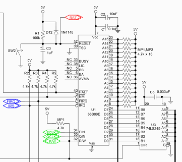

Home
Blog
Projects
Links
About
CoCo3.org

7/4/2022 8:05 PM: – Retro.NET: Add
CPU's emulation layer
7/4/2022 3:20 PM: – Greg Dionne has created a couple of great utilities for the
MC-10
. A TASM like assembler for the MC6801
Tasm6801
which we will use in the Retro.NET project and a really cool MC-10 BASIC Compiler
MCBASIC
.
7/3/2022 2:20 AM: – Retro.NET:
Locate the tools!
7/2/2022 8:30 PM: – Retro.NET: Getting back into the project --
The Plan
. This video
Guide to .NET Common Intermediate Language (CIL)
is a good introduction to the .NET CIL.
7/2/2022 4:25 AM: – The
MITS Altair 8800
and the
IMSAI 8080
are fascinating to me. These along w/ the
KIM-1
and the
SWTPC
(and possibly some others) were the state of the art hobby computers of 1975. I was just 12 y/o. To bad I was not around someone at that age that was into these early computers and electronics. These are relevant to me since in the process of learning digital electronics such as CPU's / RAM / ROM and FPGA programming these are the simplest machines to understand. And at the fundamental core of computer technology today that has not changed. What has changed is the speed, capacity, size, and complexity. Check out this video that compares the
MITS Altair 8800 vs IMSAI 8080 pt. 1
|
MITS Altair 8800 vs IMSAI 8080 pt. 2
6/30/2022 3:45 AM: – This is cool! You would think the
Raspberry Pi Pico W
could definitely be used in a CoCo cart: possibly for multiple uses? Check out
The new Raspberry Pi Pico W is just $6.
6/29/2022 11:30 PM: – These are the 8 bit CPU's I'd like to be covering in my blogs and projects: My favorite is of course the
Motorola 6809
/
Hitachi 6309
. But my second favorite is the
Zilog Z80
. Then tied for third place are the rest of the 8 bitters such as the
Motorola 6800/3
, the
MOS 6502
and the Intel
8080
/
85
.
6/25/2022 11:50 PM: – I have an affinity for the
SWTPC
(
Wikipedia
|
Computing History
). It’s definitely a computer I would like to duplicate in FPGA. It might have already been done. But since it is such a simple computer I would like to re-do it myself as an exercise in learning FPGA programming.
The 8-bit home computer from 1975 you've never heard of
Let's try to get the SWTPC 6800 computer working
It was a long road to booting DOS68 on the old SWTPC 6800
Searching for bad RAM on a 45 year old SWTPC 4K RAM board
6/21/2022 9:45 PM: – From the same guy that did a Pacman, Joust, and Defender transcode comes
Robotron: 2084 On The Color Computer 3!
. Check out his blog about it here
ROBOTRON last update…
. This is quite the feat since the real arcade board has a hardware
blitter
.
6/19/2022 1:35 AM: – Interesting videos on the KIM-1
I Bought the Oldest PC on eBay! Unboxing the KIM-1
I Build & Run Microsoft BASIC from the Original Sources for the 1977 KIM-1
Computer Stuff YOU Should Know!
Dave introduces and explains the RIOT chips from his venerable 1977 Revision A KIM-1
Inside the 1977 KIM-1: CPU, Video, RAM, ROM and more!
RETRO C 1977: a C Compiler for the KIM-1
The Most Powerful PC of 1977: Best of the Best!
6/19/2022 1:10 AM: – These are good videos of a CoCo1 that needed repairing.
0035 Finally, a TRS-80 Coco 1 in the basement!
This TRS-80 Color Computer is dead, so let's fix it
6/17/2022 4:10 PM: – This is a good article on
Installing LWTOOLS on Windows using Cygwin
. From here there's just a few more steps to installing CMOC which I will cover in a blog.
6/15/2022 4:25 PM: – Added
Retro.NET
6/14/2022 10:35 PM: – Blog:
FPGA -vs- Software Emulation
6/13/2022 2:50 AM: – Added a
FPGA
section.
6/7/2022 11:22 PM: – This is a great series and a great project … I would love to buy his kit and go through it.
Build a 6502 computer
What would be cool is to duplicate what he has done but do it w/ an FPGA. Also, a 6809 version of this would be awesome.
6/5/2022 4:25 AM: – Projects:
What Projects to work on?
6/5/2022 2:55 AM: – A system I want to cover sometime, and that I would like to see a FPGA implementation of, is the
KIM-1
. Check out this video
PAL-1 computer (KIM-1 replica)
of
The Taylor and Amy Show
who built the
PAL-1
computer, a
KIM-1
replica.
6/4/2022 8:40 PM: – Blog:
Is FPGA Emulation?
6/1/2022 4:46 PM: – Blog:
FPGA's: what are they?
(Hint: they are NOT software)
6/1/2022 4:39 PM: – Another really nifty simulator is this one:
Electronic Circuit Simulator
(
GitHub
) This one does both analog and digital. Superb tool for learning.
6/1/2022 4:36 AM: – To understand and learn FPGA programming you need to become familiar w/ digital logic design. This software is a really good learning and design tool.
Digital logic design tool and simulator
5/30/2022 11:02 PM: – I’ve been following this site
Mister Retro Wolf
. If you’re interested in learning how to go about recreating a retro system in FPGA then this guy really shows us how to go about it. It’s absolutely fascinating and he is doing a great job of it. I too want to create a
MiSTer
core down the road. Perhaps the SWTPC, if no one beats me to it. I would like to help improve the
MC-10
,
CoCo2
and
CoCo3
cores as well.
5/30/2022 8:00 PM: – I enjoyed watching these. I would have loved to own one these back in the day before I got my first CoCo. I would've learned so much and done way better w/ the CoCo when I got it. I like the way he mixes old tech w/ new tech. It goes along w/ the spirit of what I have in mind for this site. What might be cool is to create a virtual ETA-3400 using FPGA as an exercise to learn FPGA.
Heathkit ET-3400 Part 1: Designing and building an ETA-3400 Memory/IO Accessory
Heathkit ET-3400 Part 2: ET-3400 vs ET-3400-A, Cassette Interface, ADC Experiment
Heathkit ET-3400 Part 3: The ET-3404 6809 adapter, cloned
5/30/2022 6:15 PM: – Added the
Blog
and
Projects
pages.
5/29/2022 9:46 PM: – Added a
Links
page.
5/28/2022 2:41 AM: – This is so awesome:
Sprites Animation Graphics & Video Games
on a CoCo1/2. Check it out!!
5/28/2022 2:29 AM: – This is a really cool project:
8bitworkshop.com
. It would be awesome if CoCo’s 1/2 & 3 were added to it. I would love to do an installable offline version of this written in C# (or Java). The HDL / Verilog emulation w/ emulated video is really cool.
5/26/2022 4:47 AM: – Site launch:
About
.